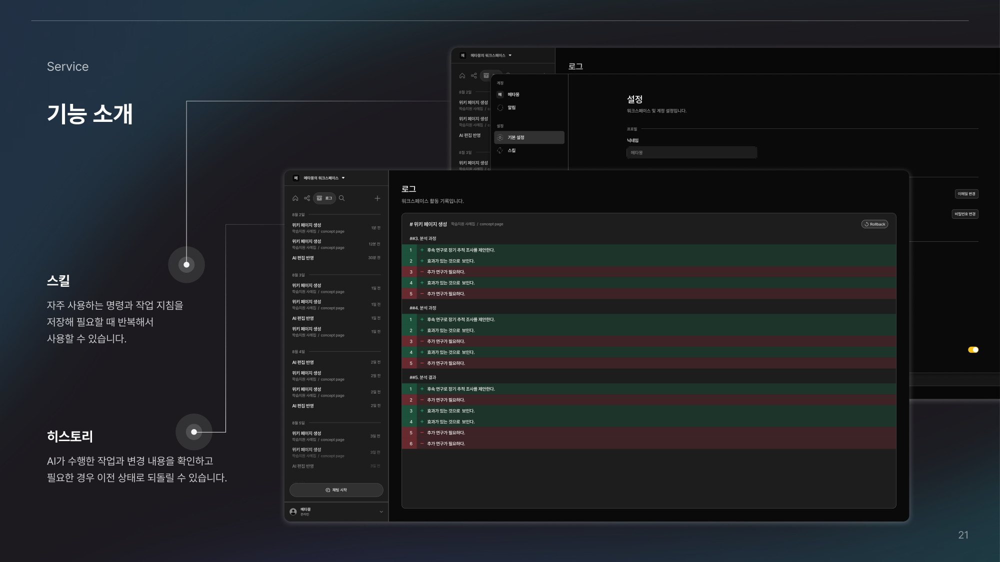

01 / AI KNOWLEDGE WORKSPACE
Fruition ↗
문서를 Wiki로 연결하고, 질문과 편집으로 지식을 활용하는 AI 워크스페이스. AI 응용 개발을 담당했습니다.

BACKEND & AI APPLICATION DEVELOPER
안녕하세요, 개발자 김재형입니다.
모델과 코드의 역할을 나누고,
선택의 근거를 데이터로 확인합니다.
동일 초안 재생 · 코드 검사 + 별도 평가
FRUITION / 검색 순위50 → 57 / 110개고정 질의 · 로컬 정답 1위 적중
PILLTIP / 데이터 변환$11.18 실제 API 지출원문 처리 예상 약 $200 · 인건비 제외
SELECTED WORK
두 프로젝트의 6가지 엔지니어링 사례.
무엇을 만들었는지와 함께,
왜 그렇게 만들었는지를 기록했습니다.
01 / AI KNOWLEDGE WORKSPACE
문서를 Wiki로 연결하고, 질문과 편집으로 지식을 활용하는 AI 워크스페이스. AI 응용 개발을 담당했습니다.
02 / PERSONALIZED MEDICATION
어려운 의약품 정보를 쉽게 안내하고 개인의 복약 맥락을 고려하는 서비스. Backend·AI 응용 개발을 담당했습니다.

문서와 지식을 연결하는 AI 워크스페이스입니다. 자연어 편집의 의도를 단계 사이에 전달하고, 코드 검사와 LLM 평가를 통과한 수정안만 사용자가 확인하도록 구현했습니다.
“짧게 해줘”라는 요청이 체크리스트로 바뀌거나, 형식 검사를 통과한 문장에 요청 누락과 어색한 표현이 남았습니다. 프롬프트의 규칙만 늘리는 방식으로는 편집 의도와 결과의 의미를 함께 확인하기 어려웠습니다.
Router의 edit_goal 전달, 역할별 프롬프트, 코드 검증 이후의 LLM 평가와 최대 1회 재생성 흐름을 구현했습니다. 생성과 실제 저장 사이에 diff 확인·사용자 승인 경계를 뒀습니다.
구현에 사용한 접근과 대안의 장단점을 정리했습니다.
| 옵션 | 얻는 것 | 감수할 것 | 판단 |
|---|---|---|---|
| 프롬프트·코드 검사 | 출력 형식과 편집 범위를 명시적으로 검사 | 형식이 맞아도 의미와 요구사항 누락을 놓침 | 기본 방어선으로 유지 |
| LLM 평가 + 제한된 재시도 | 요청·제약·원문 의미를 추가로 확인 | 평가 호출 비용과 응답시간 증가 | 선택 · 코드 검사 뒤 적용 |
| 생성 즉시 저장 | 사용자의 추가 조작 없이 자동 반영 | 잘못된 변경을 확인하기 전에 원문이 바뀜 | 미채택 · 승인 후 반영 |
형식·범위는 코드로 검사하고, 요청 충족과 의미 보존은 LLM이 평가하도록 책임을 나눴습니다. 실패 사유와 이전 결과를 전달해 한 번만 다시 생성하며, 통과한 수정안도 사용자 승인 후 적용합니다.

flowchart TD
A[자연어 편집 요청] --> B[Router · edit_goal 전달]
B --> C[Editor · 수정안 생성]
C --> D{코드 검사}
D -->|통과| E{LLM 의미·요청 평가}
D -->|실패| R[실패 사유와 이전 결과]
E -->|실패| R
R --> T{재생성 횟수}
T -->|0회 · 한 번 재생성| C
T -->|이미 1회| X[수정안 반환 차단]
E -->|통과| F[Preview · diff 확인]
F --> G{사용자 승인}
G -->|승인| H[문서에 반영]
G -->|취소| I[원문 유지]
classDef accent fill:#e5edff,stroke:#4164c8,color:#142b60;
class B,E,G accent;기존 문서 편집의 검증·승인 흐름. LLM 평가는 사용자 승인을 대체하지 않습니다.
flowchart TD
A[자연어 편집 요청] --> B[Router · edit_goal 전달]
B --> C[Editor · 수정안 생성]
C --> D{코드 검사}
D -->|통과| E{LLM 의미·요청 평가}
D -->|실패| R[실패 사유와 이전 결과]
E -->|실패| R
R --> T{재생성 횟수}
T -->|0회 · 한 번 재생성| C
T -->|이미 1회| X[수정안 반환 차단]
E -->|통과| F[Preview · diff 확인]
F --> G{사용자 승인}
G -->|승인| H[문서에 반영]
G -->|취소| I[원문 유지]
classDef accent fill:#e5edff,stroke:#4164c8,color:#142b60;
class B,E,G accent;고정 19종 요청에서 수집한 최초 초안 114개를 세 버전에 동일하게 재생했습니다. 생성·런타임 평가는 GPT-5-nano(medium), 별도 블라인드 평가는 Gemini를 사용했습니다. 미반환도 실패로 세고 코드 검사와 별도 모델 평가를 모두 통과해야 성공으로 집계했습니다.
환산 평균 시간은 11.11초 → 18.92초로 증가했습니다. 실패 초안을 재사용한 개발 회귀셋의 결과이며, 독립 테스트셋이나 운영 사용자 정확도가 아닙니다. 최종 반환 111건 중 7건은 별도 평가를 통과하지 못했습니다.
다음 검증 실제 사용자 요청에서 재작업 여부와 승인 후 저장까지의 성공을 별도로 검증해야 합니다.
근거 · 문서 편집 승인 ADR 0011 · 고정 초안 재생 평가 / 최신 이력서
관련 회고 · 신뢰도를 위한 LLM 평가의 양면성 ↗질문이 편집으로 분류되면 사용자는 답변 대신 수정안을 받습니다. 라우팅 정확도를 높이기 위해 Jev를 검토하고, 출력 형식의 차이와 모델의 차이를 분리한 세 가지 비교군을 평가했습니다.
라우터가 요청을 잘못 분류한 뒤 실행 Agent가 의도를 다시 판단하면, 같은 요청이 다른 경로로 넘어가기도 했습니다. 라우팅의 유효한 선택지를 명시하고, 어떤 모델이 작업 종류와 부가 조건을 더 일관되게 고르는지 확인할 필요가 있었습니다.
기존 JSON 생성 방식, 같은 유효 조합을 고르는 GPT-5 nano, 같은 선택지를 고르는 Jev를 비교했습니다. action만이 아니라 라우팅 필드 전체가 정답과 일치하는지 평가하고, 형식 제약이 달랐던 초기 비교는 제외한 뒤 다시 측정했습니다.
구현에 사용한 접근과 대안의 장단점을 정리했습니다.
| 옵션 | 얻는 것 | 감수할 것 | 판단 |
|---|---|---|---|
| 기존 JSON · GPT-5 nano | 기존 라우팅 경로를 그대로 평가 | 전체 JSON 생성과 필드 검증이 필요 | 기준 비교군 |
| 선택형 · GPT-5 nano | Jev와 같은 선택지·출력 제약으로 비교 | 이번 평가에서 63/98 전체 필드 일치 | 형식 차이를 통제한 비교군 |
| 선택형 · Jev | 미리 정의한 유효 조합 중 판단 | clarify·복합 workflow 등 약점이 남음 | 적용 가능성 평가 · 범용 우위로 단정하지 않음 |
Jev는 긴 응답을 작성하는 역할 대신, 미리 정해진 구조의 선택을 수행하는 데 사용했습니다. 기존 JSON과만 비교하면 출력 방식까지 달라지므로, GPT에도 같은 유효 조합과 출력 제약을 제공한 대조군을 뒀습니다.
flowchart TD
Q[고정 요청 · 100문항] --> L{로컬 규칙 처리}
L -->|2문항| R[모델 평가와 분리]
L -->|98문항| S[같은 요청·문맥]
S --> J[기존 JSON · GPT-5 nano]
S --> G[동일 선택지 · GPT-5 nano]
S --> V[동일 선택지 · Jev]
J --> E[라우팅 필드 전체 정답 비교]
G --> E
V --> E
E --> M[정답률 · 시간 · 추정 비용]
classDef accent fill:#e5edff,stroke:#4164c8,color:#142b60;
class G,V,E accent;제품의 실행 순서가 아닌 비교 실험 설계입니다. 두 선택형은 같은 유효 조합과 출력 제약을 사용했습니다.
flowchart TD
Q[고정 요청 · 100문항] --> L{로컬 규칙 처리}
L -->|2문항| R[모델 평가와 분리]
L -->|98문항| S[같은 요청·문맥]
S --> J[기존 JSON · GPT-5 nano]
S --> G[동일 선택지 · GPT-5 nano]
S --> V[동일 선택지 · Jev]
J --> E[라우팅 필드 전체 정답 비교]
G --> E
V --> E
E --> M[정답률 · 시간 · 추정 비용]
classDef accent fill:#e5edff,stroke:#4164c8,color:#142b60;
class G,V,E accent;기존 JSON 대비 Jev는 전체 필드 정답이 4건(+4.08%p) 많았습니다. 시간 중앙값은 8.967초 → 0.658초, 전체 100문항의 API 추정 비용은 $0.089108 → $0.040837이었습니다. 로컬 규칙까지 포함하면 기존 JSON은 79/100, Jev는 83/100입니다.
적은 표본의 단일 실행입니다. clarify는 Jev 0%, 기존 JSON 50%였고 생성·복합 workflow에서도 기존 JSON이 더 높았습니다. 실행 시점과 캐시 조건이 다르므로 지연·비용은 해당 조건의 관측값입니다. 비용은 응답 사용량×표준 단가 추정액이며 실제 청구액이 아닙니다.
다음 검증 실패한 요청 유형을 확대하고 반복 측정한 뒤 적용 범위를 결정해야 합니다. 동일 선택지 GPT 대비 차이를 기존 서비스 대비 개선량으로 쓰지 않습니다.
근거 · 기존 검색·라우팅과 Jev 최종 비교 · 라우팅 100문항 / 98개 모델 문항
Jev의 구조화된 판단 방식 · TypeSafe 공식 소개 ↗질문의 의미를 보존하는 검색 입력과 순위 기준을 찾았습니다. 구성별 벤치마크와 실제 코드 변경 전후를 구분해, 무엇이 개선됐는지 확인했습니다.
한국어 의미 검색을 보완하려고 키워드 검색을 결합했지만, 원점수의 척도 차이로 키워드가 순위를 지배했습니다. 질문을 키워드로 줄이는 과정에서도 맥락이 사라져 같은 뜻의 문서를 놓쳤습니다.
BM25·의미 검색·Hybrid·RRF를 비교하고, 의미 검색 입력을 원문 질문으로 바꿨습니다. 당시 검색 점수 계산에서 의미 점수 비중을 높인 변경을 동일한 복원 자료로 재평가했습니다.
구현에 사용한 접근과 대안의 장단점을 정리했습니다.
| 옵션 | 얻는 것 | 감수할 것 | 판단 |
|---|---|---|---|
| Hybrid 원점수 결합 | 정확한 단어와 의미 유사도를 함께 사용 | 점수 척도 차이로 키워드가 순위를 지배 | 원점수 합산 방식 재검토 |
| RRF | 서로 다른 점수를 순위로 결합 | 비교 평가에서 의미 검색보다 낮은 성능 | 도입 보류 |
| 원문 의미 검색 중심 | 질문에 담긴 관계와 맥락 보존 | 명칭 일치 보정의 영향은 별도 확인 필요 | 선택 · 의미 점수 비중 확대 |
기술을 더 결합하기보다 입력과 점수 계산부터 수정했습니다. 의미 검색에는 원문 질문을 사용하고, 정확한 명칭의 후보 탐색을 위해 BM25는 유지했습니다. RRF는 평가상 이점이 확인되지 않아 추가하지 않았습니다.

flowchart TD Q[사용자 질문] --> K[키워드 재작성] Q --> R[맥락을 보존한 원문 질문] K --> B[BM25 · 명칭 후보] R --> D[BGE-M3 · 의미 점수] B --> S[검색 점수 계산] D --> S S --> C[개념 순위] C --> E[고정 정답으로 Hit@1 · MRR 평가] classDef accent fill:#e5edff,stroke:#4164c8,color:#142b60; class R,D,E accent;
입력과 검색 역할을 구분한 개념도. 아래 전후 평가는 후보 추출 API 대신 같은 77개 개념 전체를 사용했습니다.
flowchart TD Q[사용자 질문] --> K[키워드 재작성] Q --> R[맥락을 보존한 원문 질문] K --> B[BM25 · 명칭 후보] R --> D[BGE-M3 · 의미 점수] B --> S[검색 점수 계산] D --> S S --> C[개념 순위] C --> E[고정 정답으로 Hit@1 · MRR 평가] classDef accent fill:#e5edff,stroke:#4164c8,color:#142b60; class R,D,E accent;
당시 코드 변경과 부모 커밋을 비교한 로컬 순위 계산 결과입니다. 정답 1위는 50/110 → 57/110, MRR은 0.5947 → 0.6575였습니다. 기존 오답 7개가 정답 1위로 회복됐고, 기존 정답의 1위 이탈은 없었습니다.
개발 평가셋의 로컬 순위 계산입니다. DB 후보 선정, 권한, 그래프 탐색, 근거 선별과 최종 답변 생성은 평가에 포함하지 않았습니다. 명칭 보정이 의미 검색의 순위를 바꾸는 문제도 남아 있습니다.
다음 검증 검색 순위와 최종 답변 품질을 분리하고, 새 사용자 질의와 전체 검색 경로로 검증 범위를 넓혀야 합니다.
근거 · 기존 77개 개념 복원 및 검색 변경 전후 재평가 · 2026.09.13
라우팅에서 검토한 Jev를 근거 선택에도 적용해봤습니다. 같은 후보를 받은 기존 선택기와 비교한 뒤, 품질·시간·비용을 함께 보고 후보 수와 배치 처리 방식을 조정했습니다.
유사도가 높은 후보를 찾는 것과 질문에 필요한 사실을 모두 뒷받침하는 것은 달랐습니다. 9개 논문을 실제 ingest한 Wiki에서, 같은 최대 500개 후보를 받은 기존 선택기는 GPT 평가 기준 80문항 중 53문항의 필수 사실을 모두 충족했습니다.
정답 있는 80문항과 답 없는 20문항을 구성해 기존 선택기와 Jev를 비교하고 GPT·Gemini로 근거를 평가했습니다. Jev 순차 배치의 지연을 확인한 뒤 상위 300후보·최대 4병렬로 재평가했습니다.
구현에 사용한 접근과 대안의 장단점을 정리했습니다.
| 옵션 | 얻는 것 | 감수할 것 | 판단 |
|---|---|---|---|
| 기존 선택기 · 500후보 | 추가 선택 LLM 호출 없이 빠르게 처리 | 이번 실험의 근거 충족률은 더 낮음 | 속도·비용의 기준선 |
| Jev · 500후보 순차 | 같은 후보에서 근거 선택 품질 비교 | 후보 준비 포함 중앙값 9.090초 | 비교 후 지연 최적화 필요 |
| Jev · 300후보 4병렬 | 입력량을 줄이고 배치 대기를 분산 | 후보 축소로 일부 정답 인용 누락 가능 | 재평가 · 품질과 처리 부담 함께 확인 |
후보를 더 많이 보내기보다, 기존 점수 기준 상위 300개로 제한하고 독립 배치를 최대 4개씩 동시에 요청했습니다. 기존 500후보 안의 무작위 입력 순서는 유지했고, 정답을 후보 선정이나 Jev 입력에 사용하지 않았습니다.
flowchart TD Q[질문] --> C[BGE-M3 · BM25 후보 추리기] C --> A[기존 선택기 · 최대 500후보] C --> B[Jev · 최대 500후보 순차 배치] C --> D[상위 300후보 · 입력 순서 유지] D --> P[Jev · 최대 4개 배치 병렬] A --> E[선택 근거] B --> E P --> E E --> G[GPT · Gemini 독립 평가] G --> M[필수 사실 충족 · 답 없는 질문의 오탐] classDef accent fill:#e5edff,stroke:#4164c8,color:#142b60; class D,P,G accent;
근거 선택 비교와 300후보 재평가의 개념도. 기존 선택기·Jev 500후보 결과는 재사용하고 300후보 경로만 새로 실행했습니다.
flowchart TD Q[질문] --> C[BGE-M3 · BM25 후보 추리기] C --> A[기존 선택기 · 최대 500후보] C --> B[Jev · 최대 500후보 순차 배치] C --> D[상위 300후보 · 입력 순서 유지] D --> P[Jev · 최대 4개 배치 병렬] A --> E[선택 근거] B --> E P --> E E --> G[GPT · Gemini 독립 평가] G --> M[필수 사실 충족 · 답 없는 질문의 오탐] classDef accent fill:#e5edff,stroke:#4164c8,color:#142b60; class D,P,G accent;
같은 100문항에서 Jev 500후보 순차 대비 300후보·4병렬의 후보 준비 포함 시간이 약 75%, 선택 API 추정 비용 확인분은 약 38% 줄었습니다. 기존 선택기보다는 여전히 중앙값 기준 약 5.2배 느립니다.
| 지표 | 기존 · 500후보 | Jev · 500후보 | Jev · 300후보 |
|---|---|---|---|
| GPT 전체 판정 / 80문항 | 53/80 · 66.25% | 70/80 · 87.50% | 73/80 · 91.25% |
| Gemini 전체 충족 / 80문항 | 52/80 · 65.00% | 74/80 · 92.50% | 75/80 · 93.75% |
| 후보 준비 포함 중앙값 | 0.431초 | 9.090초 | 2.251초 |
| 선택 API 추정액 / 100문항 | $0 (추가 호출) | $2.243574 | $1.388443 (확인분) |
| 답 없는 20문항 중 근거 반환 | 20건 | 1건 | 0건 |
300후보 GPT 결과는 모델의 원래 전체 판정(73/80)을 표시했습니다. 기존 실행기의 사실 집계 규칙을 적용하면 74/80(92.50%)입니다. 한 문항에서 contradictory 근거와 판정 불일치가 있어 두 수치를 구분했습니다.
후보 수와 병렬도를 동시에 바꾼 단일 반복이므로 각각의 인과 효과를 분리할 수 없습니다. 시간은 로컬 후보 준비와 선택 시간을 합친 값으로, 초기 실패·복구 대기와 모델 로딩은 제외했습니다. 비용은 토큰 사용량×표준 단가의 확인분이며 실패 3건의 사용량은 미확인입니다. 로컬 연산·ingest·채점·최종 답변 생성 비용은 표의 선택 API 비용에 포함하지 않았습니다.
다음 검증 근거 충족률은 최종 답변 정확도가 아닙니다. 선택된 근거에도 상충 사례가 남아 있어, 반복 평가와 최종 답변 단계의 별도 검증이 필요합니다. 실서비스 전면 배포 성과로 확대하지 않습니다.
근거 · 기존 검색·라우팅과 Jev 최종 비교 / Jev 300후보·4병렬 재평가 결과
Jev 공식 소개 · TypeSafe AI ↗어려운 의약품 정보를 쉬운 표현으로 바꾸는 기능을 만들었습니다. 예산 안에서 기능을 유지하기 위해 모델 호출 전에 중복 입력을 줄이는 데 집중했습니다.
약 4만 4천 건, 1GB 규모의 원문 변환에 약 $200의 API 비용이 예상됐습니다. 비용을 줄이지 못하면 일부 약품만 처리하거나 기능을 제외해야 했습니다. 100개 표본에서 약 70%의 중복을 확인했습니다.
표본 분석과 작업 계획으로 팀을 설득해 7일의 전처리 기간을 확보했습니다. 문장 블록 분리, 유사 문장 정리, 고유 블록 변환과 원본 매핑 흐름을 구현했습니다.
구현에 사용한 접근과 대안의 장단점을 정리했습니다.
| 옵션 | 얻는 것 | 감수할 것 | 판단 |
|---|---|---|---|
| 원문 전체 즉시 변환 | 전처리 구현 없이 변환 시작 | 반복 문장에도 비용 발생 · 예상 약 $200 | 예산 제약으로 미채택 |
| 일부 약품만 변환 | 처리량과 비용을 즉시 축소 | 사용자가 얻는 정보의 범위가 줄어듦 | 기능 범위 유지 위해 미채택 |
| 중복 정리 + Batch API | 고유 블록만 변환해 원문에 재사용 | 전처리 기간과 비실시간 처리 대기 | 선택 · DB 적재용 작업에 적용 |
실시간 응답이 필요 없는 적재 작업이므로 대기 시간을 허용했습니다. 더 저렴한 호출 방식만 찾는 대신, 같은 의미의 문장을 한 번만 변환하고 결과를 재사용하도록 입력 자체를 줄였습니다.

flowchart TD A[약품 원문 · 1GB] --> B[정규표현식 정리] B --> C[문장 블록 분리] C --> D[유사 문장 · 어미 정규화] C --> M[약품 ID ↔ 블록 ID 매핑] D --> U[고유 변환 대상 · 326MB] U --> G[GPT Batch API · 한 번씩 변환] G --> R[변환 결과] M --> F[원래 약품 데이터에 재결합] R --> F classDef accent fill:#e5edff,stroke:#4164c8,color:#142b60; class U,G,F accent;
중복 제거 후에도 약품과 문장 블록의 연결을 유지해 변환 결과를 재사용했습니다.
flowchart TD A[약품 원문 · 1GB] --> B[정규표현식 정리] B --> C[문장 블록 분리] C --> D[유사 문장 · 어미 정규화] C --> M[약품 ID ↔ 블록 ID 매핑] D --> U[고유 변환 대상 · 326MB] U --> G[GPT Batch API · 한 번씩 변환] G --> R[변환 결과] M --> F[원래 약품 데이터에 재결합] R --> F classDef accent fill:#e5edff,stroke:#4164c8,color:#142b60; class U,G,F accent;
원문 전체 처리 예상 약 $200 대비 실제 API 지출 $11.18로 변환 작업을 수행했습니다. 처리 대상을 줄이면서 쉬운 표현 변환 기능의 범위를 유지했습니다.
예상치와 실지출의 비교이며 전처리 인건비는 포함하지 않습니다. 유사 문장 병합이 의미를 바꾸지 않는지 검토가 필요하고, Batch 방식은 즉시 응답이 필요한 요청에 적합하지 않습니다.
다음 검증 병합된 문장의 의미와 수치 보존을 확인하는 검증 범위를 넓히는 것이 다음 과제입니다.
근거 · Pilltip 활동 경험기술서 · 최신 이력서 · 기존 포트폴리오 발표 자료
사용자 증상에 맞는 의약품 탐색과 프로필에 따른 판단을 나눴습니다. 모델의 언어 해석 능력을 활용하면서 민감한 프로필을 사용하는 범위는 코드로 관리했습니다.
증상과 약품 효능은 같은 뜻이어도 다른 단어로 표현됩니다. 동시에 개인화에는 임신 여부·복용약·기저질환이 필요했지만, 이 프로필까지 외부 LLM에 전달하면 민감정보의 사용 범위가 넓어집니다.
약품 효능을 Weaviate에 임베딩하고 증상과 의미로 연결했습니다. 프로필이 필요한 판단은 내부 코드의 Tool로 구현해 해당 필드를 외부 LLM 입력에서 제외했습니다.
구현에 사용한 접근과 대안의 장단점을 정리했습니다.
| 옵션 | 얻는 것 | 감수할 것 | 판단 |
|---|---|---|---|
| 단어 일치 검색 | 조건을 명확히 추적하기 쉬움 | 증상과 효능의 서로 다른 표현을 놓침 | 의미 검색으로 보완 |
| 프로필 전체를 LLM에 전달 | 모델이 전체 문맥을 직접 활용 | 민감한 프로필의 외부 처리 범위 확대 | 프로필 판단에는 미채택 |
| 의미 탐색 + 내부 Tool | 증상은 의미로 찾고 프로필은 내부 판단 | 규칙 변경에 따른 코드 유지보수 | 선택 · 처리 책임 분리 |
모델이 모든 정보를 직접 보게 하는 것보다 프로필의 외부 전달 범위를 제한하는 것을 우선했습니다. 의미 검색과 프로필 판단의 처리 주체를 나누고, 내부 Tool의 입력과 로직을 코드로 관리했습니다.

flowchart TD S[자연어 증상] --> V[Weaviate · 효능 의미 탐색] P[임신 여부 · 복용약 · 기저질환] --> T[내부 Tool · 프로필 판단] V --> R[개인화 정보 제공] T --> R B[외부 LLM 입력 경계] -.-> X[해당 프로필 필드 제외] classDef accent fill:#e5edff,stroke:#4164c8,color:#142b60; class T,B,X accent;
책임과 데이터 경계를 설명하는 개념도입니다. 실제 호출 순서나 모든 데이터의 외부 유출 방지를 나타내지 않습니다.
flowchart TD S[자연어 증상] --> V[Weaviate · 효능 의미 탐색] P[임신 여부 · 복용약 · 기저질환] --> T[내부 Tool · 프로필 판단] V --> R[개인화 정보 제공] T --> R B[외부 LLM 입력 경계] -.-> X[해당 프로필 필드 제외] classDef accent fill:#e5edff,stroke:#4164c8,color:#142b60; class T,B,X accent;
증상 기반 탐색과 내부 프로필 판단을 분리했습니다. 해당 프로필 필드를 외부 LLM 입력에서 제외한 구현 성과이며, 의약 판단 정확도나 정량 차단율을 측정한 결과는 아닙니다.
외부 모델이 프로필 전체를 직접 활용하는 추론은 제한됩니다. 규칙 변경에는 코드 수정이 필요합니다. 자연어 입력, Tool 결과, 로그의 민감정보 노출 여부는 별도로 확인해야 합니다.
다음 검증 실제 요청 payload·Tool 결과·로그와 프로필별 판단 결과를 확인하는 검증이 필요합니다.
근거 · Pilltip 최신 이력서 · 프로젝트별 심화 포트폴리오